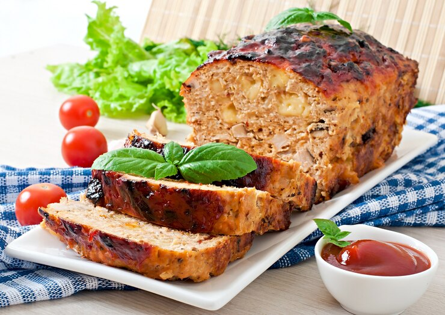

Synthetic Meatloaf

Description:
Made from lab-grown meat and mixed with a variety of nutrient-rich, genetically modified vegetables. Served with a gravy made from recycled greywater.
Ingredients
- 1 lb lab-grown meat
- 1 cup finely diced nutrient-rich, genetically modified vegetables (such as carrots, celery, and mushrooms)
- 1/2 cup breadcrumbs
- 1/4 cup milk or milk substitute
- 1 egg
- 1 tsp salt
- 1 tsp black pepper
- 1 tsp dried thyme
- 1 tsp dried rosemary
- 1/4 cup recycled greywater
Direction
- Preheat the oven to 350°F (175°C).
- In a large mixing bowl, combine the lab-grown meat, vegetables, breadcrumbs, milk, egg, salt, pepper, thyme, and rosemary. Mix until well combined.
- Form the mixture into a loaf shape and place it in a loaf pan.
- Pour the greywater over the meatloaf.
- Bake for 1 hour, or until the internal temperature reaches 165°F (74°C).
- Let the meatloaf rest for 10 minutes before slicing and serving.